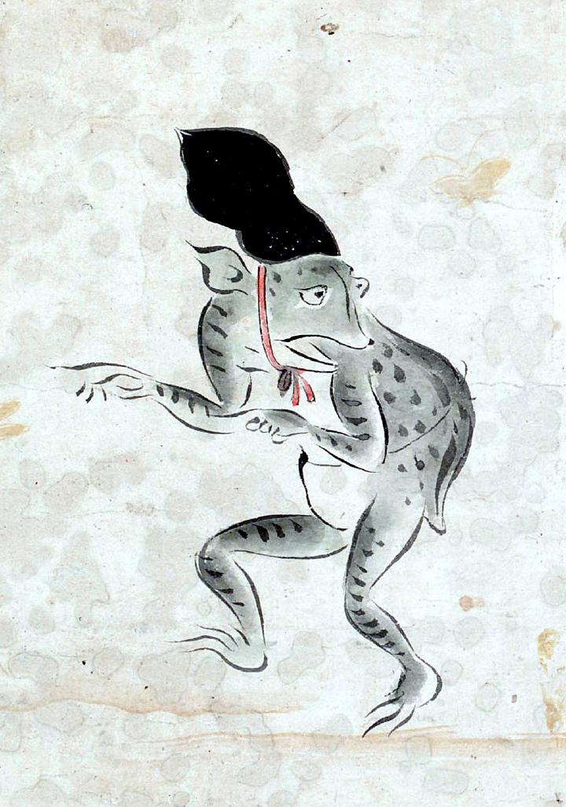

蛙の化物。頭には烏帽子をかぶり、赤い紐を顎のあたりで結んでいる。口をかるく開き、何かに話しかけようとしているように見える。背中に何かをくくり付けているように見える。
著作者：吉光／出典：親書誌：U426_nichibunken_0057：百鬼ノ図；ヒャッキノズ／日付：2006／資源識別子：U426_nichibunken_0057_0005_0005
Copyright (c)2010- International Research Center for Japanese Studies, Kyoto, Japan. All rights reserved.